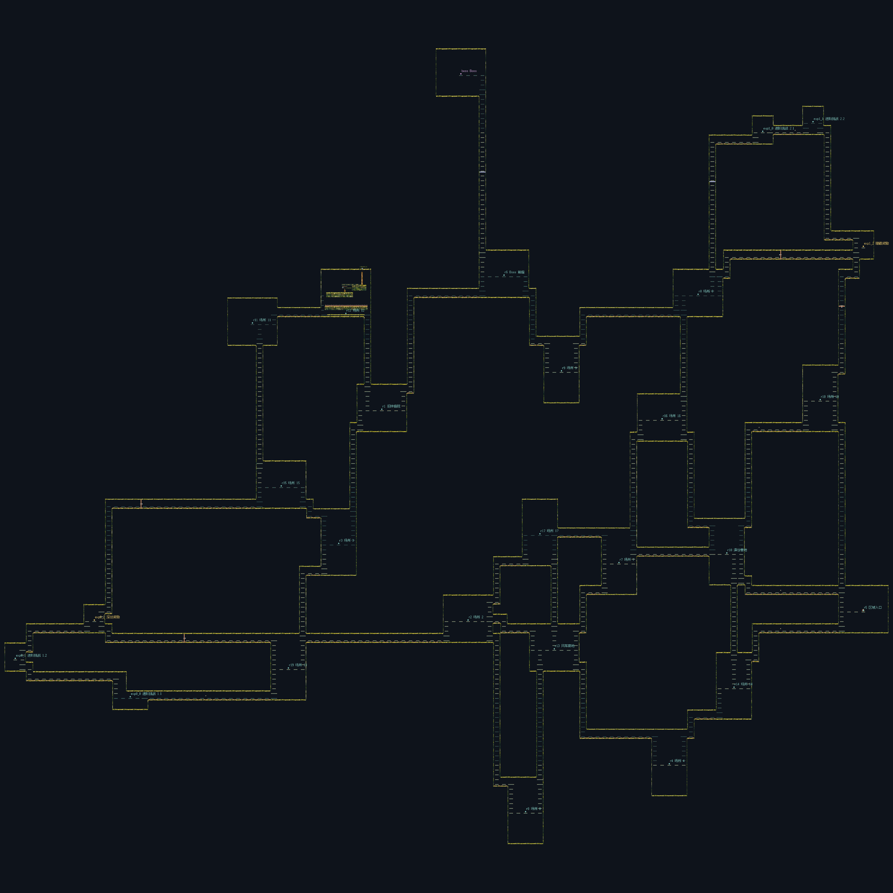
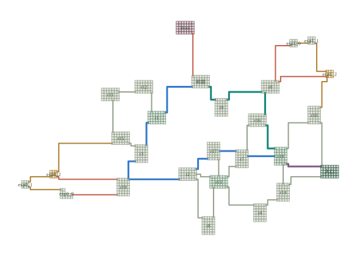

完整 R2 风铃平原：保留整张多环地图
27个场所、39条连接，主路、奖励远征、分叉汇合和多条回环都在同一个真实Godot世界中。沿用此前R2 Seed 0布局，已从原出生点实际连续巡视全部74个合法有向连接。
进入完整地图手动探索 · 下载4096整图 · 媒体与证据清单 · 结构化验证
这是可玩的结构候选。 当前大部分仍是导航Cell，长梯井和动作重复需要继续改进；没有达到《空洞骑士》区域式的内容与探索品质。技术验证不代表人工趣味认可。

真实Godot整图，未移动角色，仅调整镜头。1412平台、499地刺面、5锯轮、6状态门、1风铃侧室。点击查看原图。
01 下侧闭环 · 38.77秒
入口r5 → r14 → r18 → 回到入口，再停在实际Dock。完整连续路线，正常1倍速度；右下角为实际整图、当前位置及真实行进轨迹。
下载视频
02 上侧闭环 · 47.77秒
入口r5 → r10 → r18 → 回到入口。与01走不同方向，展示同一地图中的另一条真实闭环。
下载视频03 风铃补缺与回程 · 30秒摘录
截取完整127.42秒远征的70–100秒，包含跨房间接近、侧室击铃、领取8金币、实际回程和继续前进；不是整条远征。原1600wu底座放不下，按Map房间需求适配为新568.59×510wu版本并重验入候选库。
下载摘录 · 下载完整远征
对照：此前认可的原R2结构

这是原有抽象布局，保留其原标签；上方PNG和视频才是真实Godot实例。没有用缩小拓扑或一个分叉模块替代原地图。
验证范围
5条巡视覆盖74/74有向边；3条主线/奖励远征、2闭环×4初始相位及1条风铃远征通过。另有新入库候选再次命中、重新拼整图并实际通行。只覆盖78/154种方向合法的枢纽Port有序对，其余组合、任意资源进入状态仍未知。
三段原生完整录像共12642行动帧，运动、资源、输入、机关及事件与绑定的headless见证逐帧0差异。不存在中途传送、重建世界或补资源。Boss当前是入口目标，尚无正式Boss战/存档/敌人生态；人工手感与趣味待评。